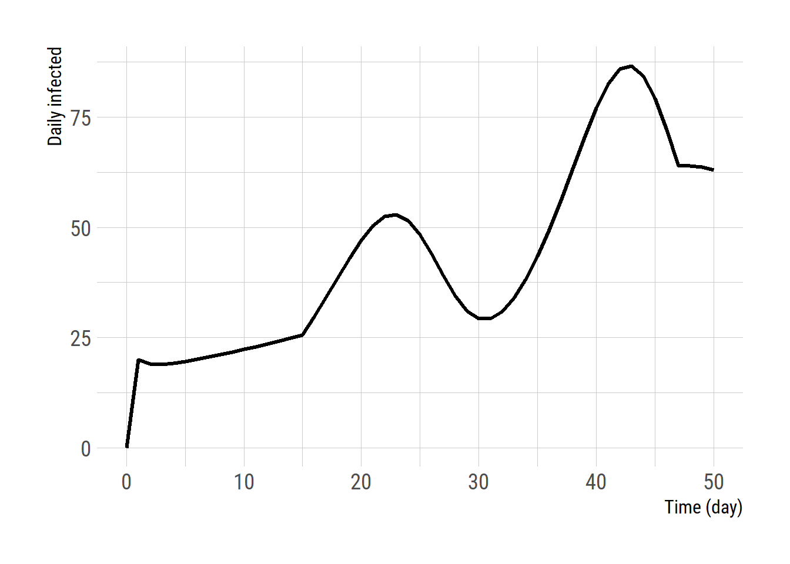
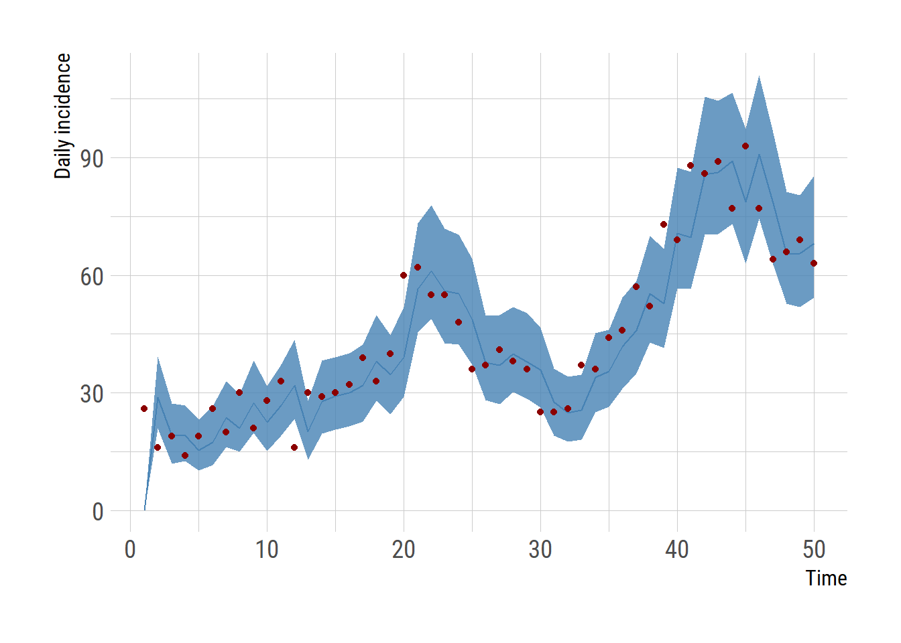
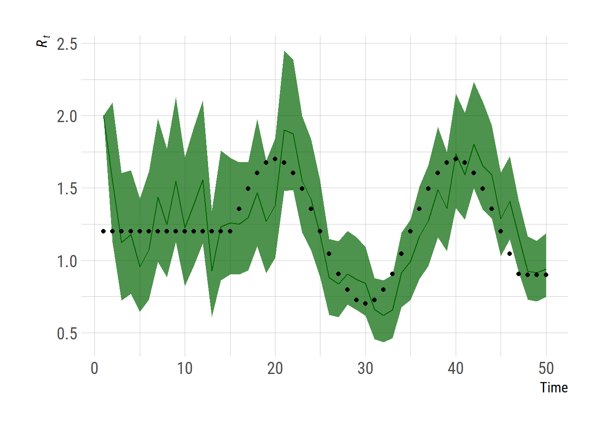

SEIR_Euler <- function (params = NULL,
y = NULL,
tbegin = 0,
tend = 1,
dt = 0.2) {
M <- matrix(NA, nrow=(tend-tbegin+1), ncol=length(y)) # output matrix
M[1,] <- y # initial values for the first row
S <- y[1]; E <- y[2]; I <- y[3]; R <- y[4]; CI <- y[5]
N <- S + E + I + R
epsilon <- params[["epsilon"]]
gamma <- params[["gamma"]]
Rt <- params[["Rt"]] # daily reproduction number
for (t in seq(tbegin, tend, by=1)) { # for each day
for (i in seq(dt, 1, dt)) { # sub-intervals that can vary
# beta is already adjusted by N
# t is not an integer
beta <- Rt[floor(t+1+dt)] * gamma # transmission rate
S_to_E <- beta * I * dt
E_to_I <- E * epsilon * dt
I_to_R <- I * gamma * dt
# update state variables
S <- S - S_to_E
E <- E + S_to_E - E_to_I
I <- I + E_to_I - I_to_R
R <- R + I_to_R
CI <- CI + S_to_E
}
# output for each day
M[t+1, 1] <- S
M[t+1, 2] <- E
M[t+1, 3] <- I
M[t+1, 4] <- R
M[t+1, 5] <- CI
}
return(M)
}Estimating the instantaneous reproduction number using the particle filter
particle filter
COVID-19
A simple particle filter in R
파티클 필터 (particle filter) 를 이용하여 잠재 변수 (latent variable)를 추정하는 과정을 지난 글에서 다루었다. 관찰값들이 코로나 19 일별 감염자일때 감염병 수리 모형을 이용하여 일별 감염재생산지수 (\((R_t\)) 를 추정한다. 아래 글은 2020년 Kucharski et al. 논문에 사용되었던 방법을 차용하였다. 이해를 돕기 위해 모형을 단순화 하였고 가상의 데이타를 만들어 내는 과정을 더하였다. 우선 SEIR 모형을 이용해서 가상의 데이타 (일별 감염자 수)를 만든다. 누적 감염자 (cumulative incidence) 를 나타내는 CI라는 변수의 일별 차이를 계산하여 일별 감염자 수를 계산한다. 보통의 SEIR 모형에서는 \(\beta\)가 상수로 취급 되지만 아래 모형에서는 일별 감염 재생산지수 \(R_t = \beta (t) \times D\) \(D\)는 감염 기간)가 방역 정책, 활동 변화 등 이유로 인해 시간에 따라 변화한다고 가정하기 때문에 시간에 따른 함수 \(\beta(t)\)로 표현한다. 우리가 추정 하고자 하는 \(R_t\)를 미리 정의하고 이로 부터 \(\beta(t)\) 를 계산하고 이를 SEIR 모형에 적용하여 가상의 데이타를 만든다.
아래와 같은 방식으로 SEIR 모형을 만든다. 본래 미분식으로 정의하고 deSolve 패키지의 ode 함수 등을 이용하여 적분할 수 있으나 이 글에서는 간단하게 Euler 방법을 사용한다.
일별 감염자 수를 플롯해본다.
# pre-defined Rt
Rt_true <- c(rep(1.2, 15), 0.5*sin(0.1*pi*0:32) + 1.2, rep(0.9, 100))
I0 <- 100 # initially infected people
y0 <- c(S = 1e7-I0, E = 0, I = I0, R = 0, CI = 0) # initial values for state variables
params <- list() # input parameters for the SEIR model
params$Rt <- Rt_true
params$epsilon <- 0.5 # 1/epsilon = latent period
params$gamma <- 0.2 # 1/gamma = duration of infectiousness
tend <- 50 # simulation end time 50 days
res1 <- SEIR_Euler(params = params, y=y0, tend=50) # run the model
res1 <- as.data.frame(res1)
res1$daily_infected <- c(0, diff(res1$V5))
res1$time <- 0:tend
library(ggplot2)
extrafont::loadfonts("win", quiet=TRUE)
theme_set(hrbrthemes::theme_ipsum_rc(base_size=14, subtitle_size=16, axis_title_size=12))
ggplot(res1, aes(x = time, y = daily_infected)) +
geom_line(size = 1.2) +
labs(x = 'Time (day)', y = 'Daily infected')
푸아송 분포를 이용하여 가상의 데이타를 만든다.
# Create the data assunming observations are poisson random variable
set.seed(42)
fakedata <- data.frame(daily_infected = rpois(nrow(res1), lambda = res1$daily_infected))일별 변화를 계산하는 SEIR 전파 모형, 행의 수는 파티클 수와 같다.
# stochastic differential equation (with beta(t) moves according to a geometric Brownian motion) are modeled using the Euler-Maruyama method.
# daily change is modeled using the subinterval dt
SEIR_step <- function (params = NULL,
y = NULL,
tbegin = 0,
tend = 1,
dt = 0.2,
beta = NULL) {
# daily infection reset to zero to hold values from tbegin to tend
y[, c("CI")] <- 0
S <- y[, "S"]
E <- y[, "E"]
I <- y[, "I"]
R <- y[, "R"]
daily_infected <- y[, "CI"]
N <- S + E + I + R
epsilon <- params[["epsilon"]]
gamma <- params[["gamma"]]
for (i in seq((tbegin + dt), tend, dt)) {
# beta is already assumed to be adjusted by N such that it can
# be translated to Rt by multiplying the duration of infectiousness
S_to_E <- beta * I * dt
E_to_I <- E * epsilon * dt
I_to_R <- I * gamma * dt
# Process model for SEIR
S <- S - S_to_E
E <- E + S_to_E - E_to_I
I <- I + E_to_I - I_to_R
R <- R + I_to_R
daily_infected <- daily_infected + S_to_E
}
y[, "S"] <- S
y[, "E"] <- E
y[, "I"] <- I
y[, "R"] <- R
y[, "CI"] <- daily_infected
return(y)
}파티클 필터링 함수
pfilter <- function (params, # parameters
y, # initial values of state variables
data, # input data set
npart = 1000, # number of particles
tend = NULL, # simulation stop time
dt = 0.2) {
# Assumptions - using daily growth rate
nstatevar <- length(y) # number of state variables
if(is.null(tend)) {
tend = nrow(data)
}
# to store state variables
latent_var <- array(0,
dim = c(npart, tend, nstatevar),
dimnames = list(NULL, NULL, names(y)))
# latent_var[, 1, ] <- y
for (nm in names(y)) { # initial value
latent_var[, 1, nm] <- y[[nm]]
}
## parameters
gamma <- params[["gamma"]]
beta0 <- params[["R0"]] * gamma
beta_sd <- params[["betavol"]]
beta <- matrix(rnorm(npart * tend, mean = 0, sd = beta_sd), nrow = tend)
beta[1,] <- beta0 # this is updated at t=2
wt <- matrix(NA, nrow = npart, ncol = tend) # weight (likelihood)
wt[, 1] <- 1 / npart # initial weights
W <- matrix(NA, nrow = npart, ncol = tend) # normalized weights
A <- matrix(NA, nrow = npart, ncol = tend) # Resample according to the normalized weight
for (t in 2:tend) {# begin particle loop
# beta changes according to a Geometric Brownian motion
beta[t, ] <- beta[t-1, ] * exp(beta[t, ])
# run process model
latent_var[, t, ] <- SEIR_step(params = params,
y = latent_var[, t-1, ],
tbegin = t-1,
tend = t,
dt = dt,
beta = beta[t,])
# calculate weights (likelihood)
# wt[, t] <- assign_weights(var = latent_var, t = t, data = data)
case_expected <- latent_var[, t, "CI"]
case_data <- round(unlist(data[t, "daily_infected"]))
expected_val <- pmax(0, case_expected) # make sure that the value is not negative
log_lik <- dpois(round(case_data), lambda = expected_val, log = T)
wt[, t] <- exp(log_lik)
# normalize particle weights
W[, t] <- wt[, t] / sum(wt[, t])
# resample particles by sampling parent particles according to weights
A[, t] <- sample(1:npart, prob = W[1:npart, t], replace = T)
# Resample particles for corresponding variables
latent_var[, t,] <- latent_var[A[, t], t,]
beta[t,] <- beta[t, A[, t]] #- needed for random walk on beta
} # end particle loop
# Marginal likelihoods
lik_values <- rep(NA, tend)
for (t in 1:tend) {
lik_values[t] <- log(sum(wt[1:npart, t])) # log-likelihoods
}
# averaged log likelihoods log(L/(npart^tend))
loglik <- - tend * log(npart) + sum(lik_values)
return (list(lik_marginal = lik_values,
lik_overall_average = loglik,
latent_var_filtered = latent_var,
beta_filtered = beta,
W = W, A = A))
}일별 변화를 계산하는 SEIR 전파 모형, 행의 수는 파티클 수와 같다.
params$R0 <- 2
params$betavol <- 0.3
sample <- pfilter(params=params, # parameters
y=y0, # initial values of state variables
data=fakedata, # input data set
npart = 1000, # number of particles
tend = tend, # simulation stop time
dt = 0.2)
observed <- fakedata$daily_infected[2:nrow(fakedata)]Plot the results
# draw incidence plot
daily_inc_summary <- t(apply(sample$latent_var_filtered[,,5], 2, quantile,
probs=c(0.025, 0.5, 0.975)))
df <- cbind(data.frame(time=1:(nrow(res1)-1), observed = observed), daily_inc_summary)
ggplot(df, aes(x=time)) +
geom_ribbon(aes(ymin=`2.5%`, ymax=`97.5%`), fill="steelblue", alpha=0.8)+
geom_line(aes(y=`50%`), color="steelblue")+
geom_point(aes(y=observed), color = "darkred")+
labs(x="Time", y="Daily incidence")
# draw daily Rt plot
dur <- 1/params$gamma
daily_Rt_summary <- t(apply(sample$beta_filtered * dur, 1, quantile,
probs=c(0.025, 0.5, 0.975)))
df <- cbind(data.frame(time=1:(nrow(res1)-1), true_Rt = Rt_true[2:51]), daily_Rt_summary)
ggplot(df, aes(x=time)) +
geom_ribbon(aes(ymin=`2.5%`, ymax=`97.5%`), fill="darkgreen", alpha=0.7)+
geom_line(aes(y=`50%`), color="darkgreen")+
geom_point(aes(y=true_Rt), color = "black") +
labs(x="Time", y=expression(italic(R[t])))
# ggsave("particle_filter_covid.png", gg, units="in", width=3.4*2, height=2.7*2)